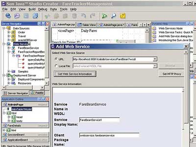
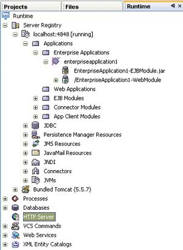
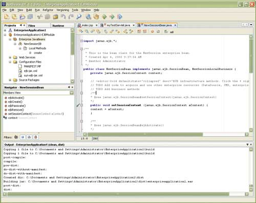

Андрей Колесов
Сразу после анонсирования технологии Java - а это произошло ровно 10 лет назад, 23 мая 1995 г., - корпорация Sun Microsystems (http://www.sun.com) приступила и к формированию комплекса средств разработки Java-приложений. При этом в силу рыночного позиционирования компании первоочередное внимание уделялось инструментарию для создания сложных корпоративных решений, тем более что Sun уже имела солидный опыт в этой области, поддерживая такие языки, как C/C++, Fortran и COBOL.
На сегодняшний день арсенал Sun включает весьма представительный набор средств разработки (см. таблицу), в котором роль лидера отводится мощному комплексу Java Studio Enterprise, предназначенному для профессионалов, создающих сложные решения корпоративного уровня. Однако успешное внедрение ИТ требует сегодня повышенного внимания к массовому рынку, что, в частности, подразумевает наличие простых, но эффективных инструментов для разработки реальных деловых приложений не слишком искушенными программистами. По-видимому, именно этими соображениями руководствовалась Sun, выпустив в середине 2004 г. новый продукт под названием Java Studio Creator, продвижению которого корпорация придает сейчас особое значение.
По мнению Sun, Java Studio Creator (ранее носивший кодовое название Project Rave) - это средство Java-разработки нового поколения, сочетающее в себе полное соответствие стандартам Java с простой технологией визуального программирования. Оно предназначено в первую очередь разработчикам, перед которыми стоит задача быстро создавать критически важные для бизнеса приложения, но которым при этом не хотелось бы глубоко погружаться в детали собственно Java-программирования. Отметим, что и цена на продукт весьма умеренная - годовая подписка стоит 99 долл.
Средства разработки Sun Microsystems
| Инструмент | Назначение |
| Java Studio Creator | Визуальный инструмент разработки бизнес-приложений с использованием ключевых возможностей платформы Java |
| Java Studio Enterprise | Унифицированная инструментальная платформа для разработки приложений масштаба предприятия, интегрированная с серверами Sun Java Enterprise System |
| Java Studio Mobility | Средство разработки приложений, предназначенных для развертывания на мобильных устройствах, использующих технологию Java |
| Java Studio Standard | Интегрированная среда разработки для Java (ранее назывался Sun One Studio, Standard Edition) |
| Sun Studio | Интегрированный набор инструментов для корпоративных и независимых разработчиков, позволяющий создавать и развертывать приложения на языках C, C++ или Fortran для платформы Sun |
| COBOL | Среда разработки для создания новых или поддержки существующих приложений на языках COBOL и Object COBOL, а также для их развертывания на различных аппаратных платформах и ОС |
| Connector Builder | Средство разработки коннекторов для Web-сервисов при решении задач интеграции J2EE и Web-приложений с различными корпоративными системами и унаследованными приложениями |
| Unified Development Server | Интегрированное решение для быстрого создания и развертывания сетевых приложений, а также управления ими в процессе эксплуатации |
Возможности Java Studio Creator
Java Studio Creator - инструментальное средство для создания распределенных многоуровневых Web-приложений, полностью построенных на стандартах технологии Java (рис. 1). Интегрированная среда разработки (Integrated Development Environment, IDE) базируется на визуальной модели работы с компонентами, которая в последние годы применяется и во многих других аналогичных средствах - Delphi, JBuilder, PowerBuilder, Visual Cafe, Visual Studio и т. д. Тем, кто знаком с такими продуктами (например, Visual Basic), не составит большого труда освоиться с Java Studio Creator (JSC).
|  |
| Рис. 1. Интегрированная среда разработки Java Studio Creator.
|
Разработка приложений с помощью JSC определяется следующими его возможностями:
- мощный набор компонентов, реализованных по стандартам технологии JavaServer Faces (JSF), которыми можно визуально манипулировать прямо в среде разработки;
- поддержка в IDE технологии drag-and-drop с использованием редакторов свойств и событий;
- шаблоны для создания стандартных архитектурных решений;
- поддержка полного цикла разработки в IDE, включая проектирование, кодирование, сборку, запуск и отладку;
- автоматизированное конфигурирование и развертывание на сервере приложений;
- управление всеми ресурсами приложения, включая серверы приложений, соединения с базами данных и Web-сервисы.
Приложения в JSC создаются в виде проектов. По умолчанию каждый проект содержит программный код для работы с JSF-компонентами. Программист может визуально добавлять нужные компоненты и писать необходимый код для настройки приложения. Весь цикл разработки программы выполняется в среде JSC. Поддержка и обновление библиотеки JSF обеспечивается с помощью подключения J2EE 1.4 SDK.
Основу модели разработки в среде JSC составляет архитектура повторно используемых многофункциональных компонентов. Непосредственно в состав продукта входит стандартный набор компонентов для создания пользовательского интерфейса - кнопки, текстовые поля, меню, гиперссылки и т. п. С их помощью выполняется ввод данных, навигация по страницам, управление состояниями и событиями на стороне клиента и сервера. IDE включает специальный редактор для задания свойств компонентов и настройки методов, соответствующих происходящим событиям. Кроме того, с его помощью можно добавлять код в файлы классов JavaServer Pages или JavaBeans. Можно расширить возможности IDE, добавив в нее внешние JSF-компоненты, в том числе созданные независимыми поставщиками.
Каждая Web-форма в JSC связана с классом JavaBeans, называемым Page Bean и содержащим код для создания компонентов на Web-странице. В нем также хранится стандартный набор свойств для этих компонентов. Общая логика работы выглядит примерно следующим образом: Page Bean инициализирует свойства компонентов и поддерживаемых JSF классов; IDE создает событийно-управляемые методы для компонентов, задействованных на Web-форме; программист настраивает обработчики событий, написав собственный код или используя стандартные заготовки (code clips).
С помощью инструмента JSC Early Access экземпляр Page Bean подключается к Web-форме в рамках контекста сессии. Для каждой такой сессии среда исполнения JSF создает новый рабочий экземпляр. Сама сессия продолжается в течение всего времени перемещения пользователя по различным страницам, при этом можно работать с данными, сохраненными на различных страницах. При работе нескольких пользователей одновременно запускается соответствующее число сессий, при этом модуль исполнения автоматически отслеживает связь конкретных пользователей со своими экземплярами страниц и задействованных на них компонентов. На завершающем этапе Java Studio Creator может выполнить настройку сессий таким образом, что определенные наборы данных будут предназначены только для конкретных пользователей.
Жизненный цикл процесса исполнения приложения в JSC определяется алгоритмом обработки запросов Web-страницами. Он включает стандартный цикл "запрос-ответ" в рамках технологии JSF.
Навигация в приложениях, создаваемых в JSC, организована с помощью ссылок между страницами и компонентами. Эти ссылки формируются в виде строковых свойств в специальном навигационном XML-файле данного проекта или с помощью средства Navigation Editor. Чтобы определить ссылку в Navigation Editor, нужно щелкнуть соответствующую страницу или элемент управления и затем соединить его мышью с нужной страницей. С программной точки зрения ссылка представляет собой значение, получаемое с помощью метода Action для данного компонента (кнопка, гиперссылки и т. п.). Получив такой строковый параметр, JSC передает его в экземпляр NavigationHandler, который, в свою очередь, передает его в на соответствующую страницу приложения. Таким образом можно реализовать как статический, так и динамический режим навигации между страницами. Можно также использовать другие схемы навигации, например, стандартные Java Event Listeners.
Основываясь на событийной модели JavaBeans, JSC управляет событиями с помощью интерфейсов Listener и классов Event. Действия событий, которые представляют собой результат щелчков мышью по кнопкам и гиперссылкам, выполняются с помощью методов Action. События, связанные с изменением величин, обрабатываются соответствующими компонентами JSP. Чтобы добавить код, который будет отслеживать изменение параметров, нужно просто дважды щелкнуть нужный компонент и открыть управляющий метод в Page Bean.
Обработка событий связывается с нужными JSF-компонентами через параметр Action или атрибут valueChangeListener. Среда исполнения JSF обрабатывает все события на сервере, а не в клиентском Web-браузере. Однако на клиентской стороне можно подключить код JavaScript для обработки событий. Это делается с помощью Property Editor или Code Editor в среде разработки JSC.
Значительная часть разработки приложений связана с необходимостью обработки исключений. В большинстве случаев ошибки в JSC-приложениях сопровождаются генерацией сообщений RunTimeException. Такие ситуации JSC обрабатывает примерно теми же методами, что и другие события, происходящие на Web-страницах.
Подводя итог краткому описанию Java Studio Creator, можно сказать, что данный инструмент поддерживает полный цикл разработки приложений, включая управление источниками данных, серверами и Web-сервисами. Работать с ним просто и достаточно эффективно.
Проект NetBeans как технологическая основа инструментов Sun
Приведенный выше список инструментальных средств Sun не отражает весь спектр технологий разработки корпорации. Ведь у нее есть еще проект создания интегрированной платформы NetBeans, которая играет особую роль в реализации стратегии Sun в области средств разработки и сегодня фактически выступает главным конкурентом Eclipse среди Java-инструментов.
История NetBeans началась в 1996 г. в Чехии со студенческого проекта под названием Xelfi, ключевая идея которого заключалась в создании Delphi-подобной среды Java-разработки, написанной, в свою очередь, на Java. Немного позже команда разработчиков организовала компанию под названием NetBeans ("Сетевые бобы"; под beans, судя по всему, имеются в виду кофейные бобы), которая выпустила две коммерческие версии инструмента NetBeans Developers 2.0 и 2.1, а в мае 1999 г. представила бета-версию 3.0.
Однако как раз в это время Sun Microsystems решила провести серьезную реорганизацию своего инструментального направления. С этой целью в августе 1999 г. она приобрела компанию Forte Software, одного из ведущих поставщиков средств разработки приложений для электронного бизнеса, а еще спустя два месяца - чешскую NetBeans, в штат которой в тот момент входило 40 инженеров (условия последней сделки не оглашались). После этого Sun объявила о прекращении развития своего продукта Java Workshop и вскоре представила новое семейство средств под названием Forte. В результате бывшая бета-версия NetBeans Developer 3.0 появилась на рынке под именем Forte for Java Community Edition в качестве бесплатного инструмента для разработки настольных приложений и простых Web-решений. А средства самой Forte были ориентированы на создание сложных настольных и серверных систем и легли в основу будущей линейки Sun Studio (C, C++, Fortran) и Sun Java Studio. Однако сразу отметим, что среда разработки сегодняшних версий Sun Java Studio (в том числе и Creator) построена на базе NetBeans.
В июне 2000 г. Forte for Java Community Edition вернул себе историческое название NetBeans и был преобразован в проект, реализуемый на базе концепции open source. Более того, он был в некотором роде выведен за рамки бизнеса Sun Microsystems и представлен организационно как независимый некоммерческий проект (http://www.netbeans.org). Компания Sun при этом именует себя просто спонсором, хотя на самом деле остается его единоличным руководителем. Хотя сайт проекта реализован от имени NetBeans-сообщества, но на самом деле это сообщество там же называется "вибрирующим" (vibrant) - под ним понимается возможность для всех желающих задавать вопросы, советовать, делиться опытом, т. е. быть участником проекта с совещательным голосом. В настоящее время около 100 тыс. разработчиков из более чем 130 стран зарегистрированы на сайте в качестве участников проекта, использующих средства NetBeans. В понятие "сообщество" входят также фирмы, создающие программные решения, совместимые с NetBeans.
Первоначальной целью проекта NetBeans было создание конкретного Java-инструмента. Однако после его покупки компанией Sun круг задач существенно расширился. Если сначала это средство было ориентировано на индивидуальных программистов, то потом оно стало развиваться в направлении групповой разработки с поддержкой всего жизненного цикла создания и внедрения приложения. Далее, одной из ключевых начальных идей NetBeans было формирование модульной, расширяемой, гибко настраиваемой интегрированной среды разработки (IDE), в том числе с помощью открытого набора API. Поэтому следующим логичным шагом стало разделение проекта на две части - базовую платформу NetBeans Platform и собственно инструмент разработки NetBeans IDE, которые теперь представлены в виде отдельных бесплатных продуктов, предназначенных как для коммерческого, так и для некоммерческого применения*.
* По данным, приведенным на netbeans.org, в 2003 г. (более поздних сведений нет) зафиксировано более 2 млн загрузок NetBeans IDE и 35 тыс. загрузок NetBeans Platform.
Более того, сейчас продукт NetBeans IDE уже вышел за рамки среды для разработки приложений и рассматривается также в качестве универсальной специализированной среды для реализации функционально насыщенных клиентских интерфейсов (тут можно провести аналогию с проектом Eclipse, круг задач которого расширялся по такой же точно схеме).
NetBeans Platform - это универсальная среда поддержки (core runtime) для создания настольных приложений (рис. 2 и 3). Она реализована на Java и соответственно может работать с любой ОС (в частности, Solaris, Windows, Linux, Macintosh), в которой имеется Java 2 Virtual Machine (версия 1.3 и выше). С точки зрения разработчика она представляет собой открытый набор API, реализующий верхний уровень общих сервисов (поверх Java-машины) - управление визуальным интерфейсом, работа с памятью, доступ к файловой системе и т. д.
|  | Рис. 2. Project Navigator обеспечивает простой доступ ко всем компонентам проекта.
|
|  |
| Рис. 3. Окно Runtime позволяет видеть текущее состояние процесса выполнения, использование внешних сервисов, параметры отладки и т. д.
|
NetBeans IDE - это собственно среда разработки, построенная по модульному принципу на базе NetBeans Platform и расширяемая, в том числе за счет подключения внешних модулей (plug-ins). В своем стандартном варианте она может применяться для создания кросс-платформных настольных, Web- и мобильных приложений. На ее базе можно построить полномасштабную систему разработки решений любого уровня сложности для всего жизненного цикла ПО.
После приобретения в 1999 г. чешского инструментария Sun выпустила несколько его модификаций с номерами версий 3.5 и 3.6, а в конце 2004 г. представила новый вариант платформы и IDE - 4.0. Но уже в феврале нынешнего года была выпущена бета-версия NetBeans IDE 4.1, а в мае состоялось ее официальное представление.
NetBeans IDE 4.0, полностью оправдывая смену номера версии, стал наиболее значительным обновлением этого продукта за последние пять лет - в нем существенно улучшена поддержка J2EE, средства интеграции и настройки инструмента, а также скорость работы на всех платформах, включая Linux. Ниже коротко описаны основные новшества этого решения.
Поддержка J2SE 5.0. NetBeans 4.0 стал первым Java-инструментом, реализованным на базе новой версии спецификаций Java 2 Standard Edition, известной ранее под кодовым названием Tiger. Она, в частности, предусматривает управление программой с помощью метаданных, что позволяет модифицировать приложения без их переустановки.
Система проектирования на базе Apache Ant. Этот инструментарий позволяет автоматизировать и упростить создание и развертывание исполняемых модулей программ за счет широкого применения скриптов, в том числе в условиях командной разработки. Для управления этими процессами используются файлы открытых форматов. Ожидается, что в версии 4.1 появится возможность реализации сценариев на языках Groovy и Jython, более простых и удобных, чем Java.
Рефакторинг. Эти возможности управления программным кодом основаны на собственной технологии исследовательского подразделения Sun, отработанной в рамках проекта.
Профилирование производительности. Новый инструмент Performance Profiler отслеживает использование памяти (в том числе ее утечки), загрузку центрального процессора, выполнение заданий и т. п. Все это интегрировано в основной процесс разработки ПО.
Web-разработка. Расширенная поддержка стандартов J2EE (версии как 1.3, так и 1.4) дает разработчикам возможность использовать готовые ресурсы и структуры для создания Web-приложений различного уровня сложности.
Создание мобильных приложений. Возможности разработки существенно расширены за счет поддержки технологий Mobile Information Device Profile (MIDP) 2.0 и Connected Limited Device Configuration (CLDC) 1.1, а также J2ME Wireless Toolkit (WTK) 2.2. Это позволяет писать и отлаживать программы для различных мобильных устройств, не используя аппаратно-зависимого кода.
Эффективная оконная система. Поддержка различных редакторов для работы с документами, гибкое управление окнами делают более удобной работу в интегрированной среде разработки. Улучшены возможности навигации по компонентам проекта, а также управления конфигурациями проектов и классов.
В состав NetBeans IDE 4.х входят также расширенные инструменты поддержки Enhanced Enterprise JavaBeans (EJB). Кроме того, продукт включает средства поддержки миграции Java-проектов, реализованных с помощью других инструментов; особый акцент делается на импорт из среды Eclipse. Однако нужно сказать, что процесс такого преобразования кода не получается "бесшовным", так как NetBeans и Eclipse используют разные наборы функций для программирования пользовательского интерфейса. Тем не менее Import Eclipse Module позволяет автоматизировать преобразование кода, четко выделяя места, которые нужно дополнительно доработать "руками".
Завершая это краткое описание, отметим, что NetBeans 4.х может работать с широким кругом ОС - Windows 2000/XP, Solaris версий 8, 9 и 10 (платформы SPARC и x86), различные дистрибутивы Linux, Java Desktop System 2, Mac OS X 10, а также клоны Unix. Для работы нужно установить также JDK версии 1.4.2 или выше.
Дни Java-разработчиков в Москве и ПетербургеВ конце мая российское представительство Sun Microsystems (http://www.sun.ru) провело конференцию Java Developer Day. Это мероприятие проходит в нашей стране ежегодно с 1998 г., но на сей раз оно существенно отличалось от предыдущих своим масштабом: как раз в эти дни корпорация отмечала знаменательный юбилей - 10 лет с момента официального представления на рынке технологии Java. Но юбилей - это все же формальный повод, а главная причина размаха более прагматична. Дело в том, что заметно повысился интерес Sun к России как к партнеру в области развития ее программных технологий. Год назад корпорация создала в Санкт-Петербурге свой Центр высоких технологий, в котором сегодня насчитывается около двухсот специалистов, занимающихся разработкой прикладного и базового ПО. На популяризацию Java (в том числе в студенческой и академической среде) нацелен также проводимый с начала 2005 г. при поддержке Министерства информационных технологий и связи РФ конкурс проектов для разработчиков на языке Java (http://www.javakonkurs.ru). В планах Sun - расширение сотрудничества с российскими вузами в области образовательных программ. Учитывая все это, неудивительно, что конференция в нынешнем году проходила в течение двух дней - сначала в Москве, потом в Санкт-Петербурге. А для участия в ней в Россию приехала представительная команда технологических "проповедников" (непосредственно участвующих в создании Java) во главе со старшим евангелистом Реджинальдом Хатчерсоном (Reginald Hutcherson). Их доклады носили сугубо профессиональный характер и были посвящены представлению новейших продуктов и технологий и перспективам их развития. В частности, слушатели узнали, что появление новой версии Java 6.0 ожидается уже в 2006 г., причем, кроме функционального расширения, она должна стать более открытой для сообщества Java-разработчиков. В ней также должна быть существенно улучшена интероперабельность с другими программными платформами, в том числе с Microsoft .NET. Заметный интерес собравшихся вызвало и сообщение представителя петербургского центра разработки о направлениях развития мобильной Java. В рамках московской конференции был проведен круглый стол, посвященный перспективам развития и распространения Java. В его работе приняли участие Жан-Поль Бергманс, глава представительства Sun Microsystems в регионе СНГ, Реджинальд Хатчерсон, Java Technology Evangelist Sun Microsystems, российские эксперты в области Java-разработки, представители академической общественности и журналисты. А что касается интереса отечественных разработчиков к тематике конференции, можно отметить, что, несмотря на энергетические катаклизмы в Москве 25 мая, мероприятие посетило почти 500 человек. |